Воронка — это инструмент, который наглядно показывает количество лидов на каждом этапе работы, ответственного менеджера и назначенные на него задачи.
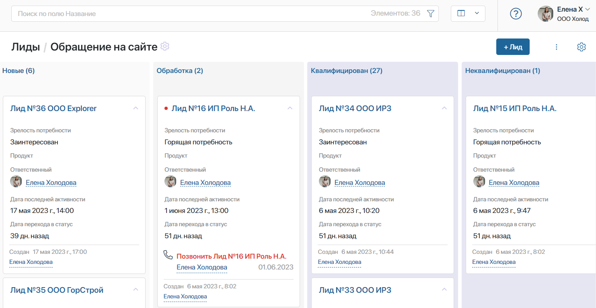
На странице воронки лиды отображаются в виде канбан-доски. Каждая колонка соответствует статусу лида. При изменении статуса лид переходит с одного этапа на другой.
По умолчанию работа с лидом состоит из трёх этапов. Созданный лид попадает в колонку Новые, проходит статус Обработка, затем вы можете Квалифицировать его в сделку или Не квалифицировать в случае неуспеха.
При необходимости вы можете построить процесс работы над лидом, подходящий именно вашей компании: изменить количество этапов, редактировать их названия, добавить действия, выполняемые при переходе лида на другой этап.
начало внимание
Настраивать, добавлять и удалять воронки могут только пользователи, включённые в группу Администраторы.
конец внимание
Добавить новую воронку
По умолчанию в приложение Лиды добавлена одна воронка, куда попадают все лиды. Для сортировки поступающих заявок по категориям вы можете создать дополнительные воронки.
Для этого справа от последней воронки нажмите на значок +. Укажите название и настройте этапы новой воронки.
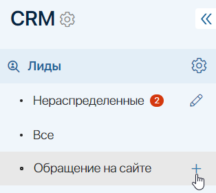
Если вы добавили несколько воронок, вы также можете изменить порядок их расположения. Для этого нажмите на значок карандаша рядом с названием страницы Нераспределенные. Затем перетащите воронки в нужное место, используя метод Drag-and-Drop.
Настроить этапы
Чтобы настроить этапы обработки лида:
- Перейдите на страницу воронки и включите способ отображения канбан-доска.
- В правом верхнем углу нажмите на значок шестерёнки и выберите пункт Настройка воронки.
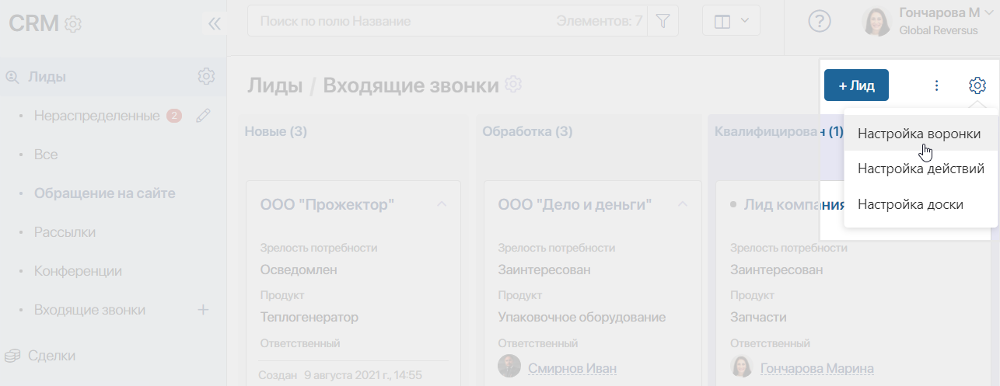
- В нижней части открывшейся страницы укажите, каким образом лиды будут переходить с одного этапа на другой:
- Менеджер вручную управляет статусами лидов — эта опция позволяет сотрудникам вручную передвигать лид с одного этапа на другой;
- Движение лидов только вперед — запретить возвращать лиды на предыдущие этапы;
- Движение лида идет согласно схеме бизнес-процесса — лид будет автоматически перемещаться с одного этапа воронки на другой в ходе выполнения бизнес-процесса. Вы можете выбрать существующий процесс или создать новый. Обратите внимание, чтобы настройка работала корректно, в процесс необходимо добавить блоки Управление статусом и выбрать статусы текущей воронки.
- Менеджер вручную управляет статусами лидов — эта опция позволяет сотрудникам вручную передвигать лид с одного этапа на другой;
- Измените настройки этапов. Вы можете:
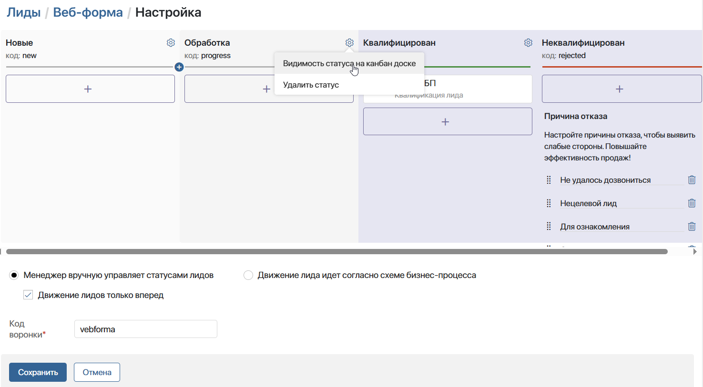- отредактировать название этапа, нажав на него;
- поменять этапы местами, перетаскивая их;
- добавить новый этап, нажав ;
- настроить действия, которые будут выполняться при изменении статуса лида;
- скрыть или показать этап лидов определённым пользователям. Настройка выполняется с помощью опции Видимость статуса на канбан-доске;
- исключить этап, нажав рядом с его названием значок шестерёнки и выбрав Удалить статус. Первый и финальные этапы удалить нельзя.
Настроить действия в воронках
Добавьте действия, которые будут автоматически выполняться при переходе лида с одного этапа на другой. Для этого в колонке с названием этапа нажмите на кнопку 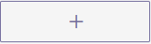.
В открывшемся окне выберите действие:
- Запуск бизнес-процесса — настройка позволяет выбрать бизнес-процесс, который будет запускаться при смене статуса лида на следующий в этой воронке. Например, вы можете создать бизнес-процесс обработки лида, который будет запускаться, как только статус изменится с Новые на Обработка;
- Email — это действие позволяет отправить сообщение на электронную почту. Например, вы можете настроить отправку коммерческого предложения потенциальному клиенту. Действие настраивается так же, как и блок Оповещение на email. Если во время отправки сообщения возникнет ошибка, например, не определится адрес получателя, сотрудник, изменивший статус лида, получит оповещение об этом;
- Webhook — вызов сторонней системы при помощи веб-хука. Выбрав это действие, вы сможете передавать данные из ELMA365 во внешнюю систему. Действие настраивается так же, как и блок Webhook. Если при отправке запроса возникнет ошибка, сотрудник, изменивший статус лида, получит оповещение об этом;
- SMS — эта опция позволяет уведомить клиентов или сотрудников о любых событиях при помощи SMS. Например, вы можете настроить отправку сообщения о действующих акциях. Чтобы настроить действие, необходимо осуществить интеграцию с провайдером сервиса sms-рассылки. Подробнее о настройке можно прочитать в статье «Отправить SMS». При возникновении ошибки, например, в получении доступа к внешнему сервису, сотрудник, изменивший статус лида, получит оповещение об этом;
- Изменение значений — эта настройка позволяет изменить значение любого поля на карточке лида при смене этапа в воронке.
Например, у лида добавлено поле Направлено коммерческое предложение типа Выбор «да/нет». Настройте действие Изменение значений, чтобы нужное значение отображалось в карточке при переходе лида на следующий этап в воронке.
Чтобы настроить действие, в левом столбце выберите поле с карточки лида, значение которого вы хотите изменить. В столбце справа укажите значение, которое будет присвоено полю.
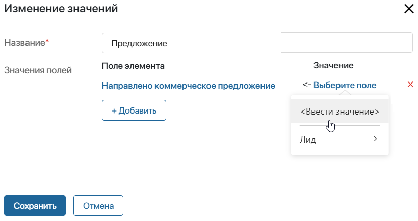
Вы можете добавить несколько действий для одного этапа в воронке. При этом они будут выполняться в том порядке, в котором были добавлены.
Финальные этапы воронки
В каждой воронке по умолчанию есть два финальных этапа: Квалифицирован и Неквалифицирован. Их нельзя удалить.
К этапу Квалифицирован привязан запуск бизнес-процесса квалификации лида. Как только лид попадает на этот этап, менеджеру, изменившему статус, приходит новая задача Заполнить данные по квалификации лида. Сотрудник может создать из лида сделку и компанию или только компанию, если сделка отложена. Подробнее об этом читайте в статье «Работа со статусами. Квалификация лида».
Если потенциальный клиент потерял интерес к покупке, лид можно перевести в статус Неквалифицирован, указав причину отказа. Список добавленных по умолчанию причин можно дополнить. Для этого на странице Настройка воронки нажмите кнопку + Добавить причину в столбце финального статуса Неквалифицирован. Чтобы удалить причину отказа, нажмите на значок корзины напротив её названия.
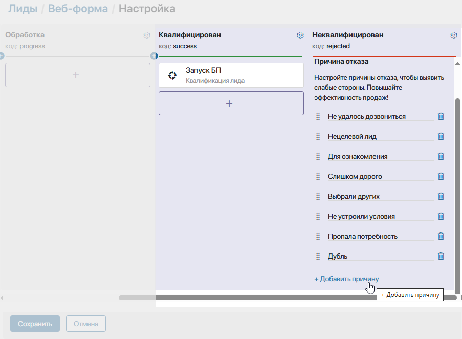
По умолчанию лиды со статусом Неквалифицирован не отображаются на странице воронки. Можно настроить видимость этапа и показать лиды в этом статусе.
Настроить видимость этапов на канбан-доске
Вы можете настроить различное отображение канбан-доски на странице воронки для разных пользователей. Например, только руководитель видит этап Новые на доске, т. к. он распределяет лиды между менеджерами. Благодаря скрытию статусов сотрудникам будут доступны те колонки, с которыми они работают.
При этом лиды со скрытыми статусами отобразятся у всех пользователей, если выбрать представление в виде таблицы.
По умолчанию скрыт статус Неквалифицирован. Остальные этапы отображаются для всех пользователей.
Чтобы показать или скрыть статус лидов:
- Нажмите значок шестерёнки справа от названия этапа и выберите опцию Видимость статуса на канбан-доске.
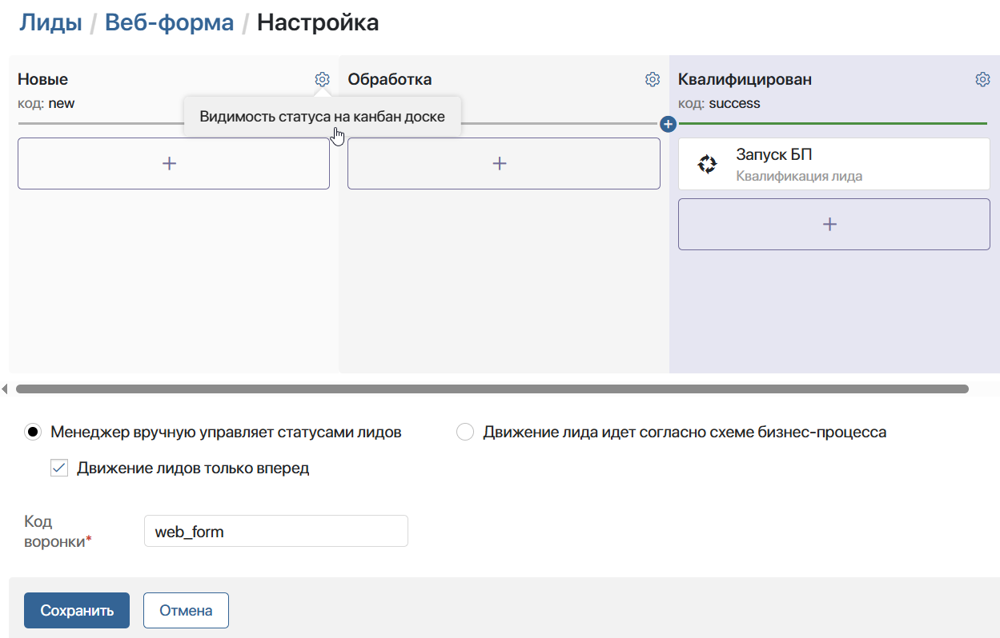
- В открывшемся окне укажите, кому показать статус лида на канбан-доске. Вы можете выбрать:
- пользователя;
- группу пользователей;
- элемент организационной структуры.
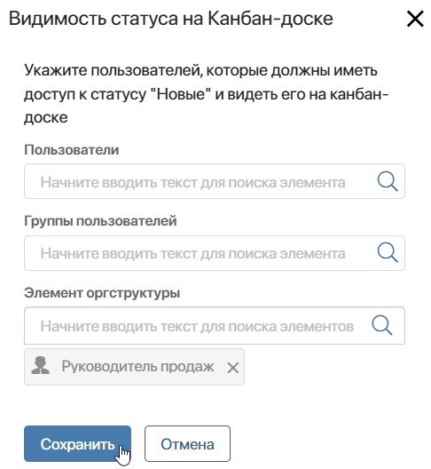
Изменить бизнес-процесс квалификации лида
Процесс квалификации лида, который по умолчанию запускается при переходе лида в статус Квалифицирован, является системным. Он недоступен для редактирования. Однако вы можете скопировать его и внести изменения, которых требуют правила работы вашей компании.
Для этого:
- Перейдите на страницу Администрирование > Бизнес-процессы и найдите в списке процесс Квалификация лида.
- Нажмите на три точки напротив его названия и выберите опцию Создать копию.
- В открывшемся окне, в поле Родительская категория, выберите раздел, в котором будет сохранён бизнес-процесс.
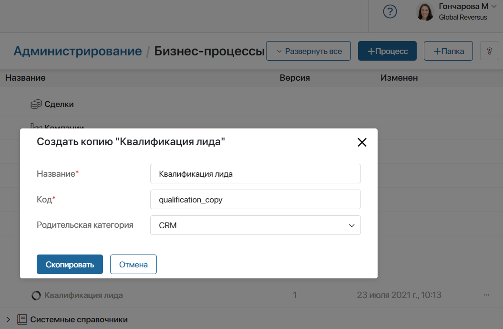 - Найдите в списке скопированный процесс и отредактируйте его.
После внесения изменений привяжите процесс к этапу Квалифицирован в воронке. Подробнее о том, как настроить запуск процесса со сменой статуса читайте в разделе «Настроить действия в воронках».
Настроить видимость воронок и их элементов
Вы можете ограничить видимость каждой воронки в левом меню, а также настроить доступ к элементам в ней.
Например, если в вашей компании несколько команд продаж, создайте группы и распределите по ним пользователей. Затем задайте настройки, чтобы группа видела только ту воронку, с которой работает, а пользователи имели доступ к определённым лидам.
Доступ к элементам ограничивается в настройках приложения Лиды.
Для настройки видимости воронки нажмите на значок карандаша рядом с названием страницы Нераспределенные. Затем выберите появившийся значок шестерёнки рядом с нужной воронкой и укажите группы и роли пользователей, которые смогут её видеть.
Подробнее об этом читайте в статье «Настройка доступа к приложениям CRM».
Удалить воронку
Страницу Все и Нераспределенные, а также воронку, добавленную по умолчанию, нельзя убрать из списка. Однако вы можете удалить пользовательские воронки. Для этого:
- В приложении Лиды откройте воронку, которую хотите удалить. Если в ней есть элементы, перенесите их в другую воронку.
- Рядом с названием страницы Нераспределенные нажмите на значок карандаша.
- Напротив удаляемой воронки нажмите значок корзины и подтвердите действие.
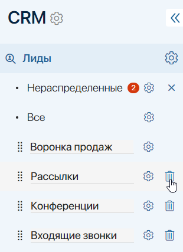